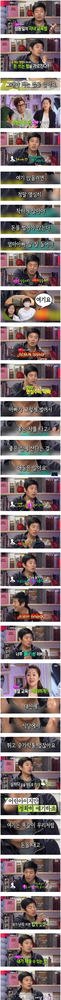
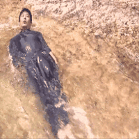

히히!
애들 교육 잘시키네
동일in물
좀 치시는군요 ㅋㅋ
아시발ㅋㅋ

오~ 어느 학원?
생활인으로서는 본받을 점이 많은 분이지. 문제는 예술도 생활처럼 해버리신다는 거지만
저건 결국 애들이 커서 나중에 이유가 뭐든 만약 돈을 많이 못벌게 된다면 행복해질수 없는 가치관을 가지게 만드는거라고 생각함
근데 선진국중 물질만능주의 끝판왕인 한국에선 그게 맞는거 같기도...
다음 생엔 저런 부모 밑에서 살아보고싶다
연옌 가족, 자식은 걱정해줄필요없음. 성동일도 자식들한테 어차피 자식새끼들이라 다 물려줄거임. 울회사에도 일은 지지리못하지만 그사람 부친이 국민배우급 인물이라 주소지보면 판교니 한남동이니 3-40억짜리 펜트하우스삶. 우리회사도 평균연봉 1.5억되는디 일못해도 운좋게 좋은직장이랑 부모만나서 잘살어
근데 일반인이먄 진짜 황금만능주의라 자산규모를 부모 못뛰어넘을가능성이 큰데 행복기준을 돈으로 만들어버려서 평생 괴롭게 살거임
여기 누가 연예인 가족 걱정해달라고 했음..?
일반인 기준이면 맞는데
아빠가 성동일인데 돈이 없겠냐만은
근데 저기 나온거 한가지만 가지고 성동일이 하는 전체의 가정교육을 이야기하진 말자
돈을 잘 버는 가치관을 가르쳤다고 해서 돈을 아무렇게나 벌어라같은 걸 가르쳤다고 생각이 들진 않네
그건 니 생각이고
나는 비슷하게 교육 받았는데
항상 남들보다 더 잘살기위해, 오늘보다 더 나은 내일을 위해 노력했고 만족함. 만약 지금보다 못한 직장, 돈벌이였다 하더라도 노력을 안한 결과보다는 무조건 나았을 결과이니까
그리고 댓글로 보이는 너의 마인드 포함 주변 대부분 사람을 보면 이 정도의 노력을 안한다고 느낌
걍 더 많은 돈, 행복을 위해 노력을 하게 되는거지 노력을 했기에 이 정도인거지 못벌면 행복해질수가 없다가아님
그건 이분법적이고 극단적으로 생각했을때나 그런거지. 열심히 살아야 부자되고 행복하다라고 가르켰다고 반대의 상황에 무조건 불행해진다는 법이 어딨냐.
애들은 아빠한테만 교육받는게 아니잖아 ㅎㅎ
엄마가 다른방식의 교육을 시키면 됨
아니 돈을 벌면 좋다, 돈을 벌어야 누릴 수 있는 것들을 아버지가 벌어오니까 누리는 거다를 가르친다는건데
이거 하나만 딱 보고 "그럼 돈을 못 벌면 나쁘다고 가르치는거네?"라고 생각하는게 난 더 이상한데
ㅈㄹㄴ
무심한듯 가정교육 열심히 함 중년
딸 진짜 이쁘게 컸더라 보고 깜짝놀람
맞기싫다는게 진짜였구나?
우리아버지도 저랬다. 돈을 잘 모으는거보다 잘 쓰는게 중요하고 자본주의의 달콤함을 알려주시려는지 대학교때 포르쉐사줌. 그리고 졸업하고 뺏음ㅋ
딸천재라는 단어가 바로 생각나는 분 ㅋㅋㅋㅋ
멕시코 부자들은 반대로 하더라 비행기 값은 내주는데 이코노미로 태움 애들이 불평하면 네가 돈 벌어서 특등석으로 오라고 하던데
나도 우리 부모님께서 저런 교육 가치관을 가지고 계셨는데, 잘 교육받고 유복하게 성장한듯
교육기준이 너무 돈 아니냐 돈이 납득시키긴 쉽긴한데 ㅋㅋ
뭐 돈말고 다른것도 교육하것제.
저 방송화면에서는 돈에 관련된거를 다룬거고
저게 전부라고 말한적 없는데
아버지가 말이야. 강에서 떠내려 가는것도 너에게 좋은 좌석을 태워주기 위해서 그런거야